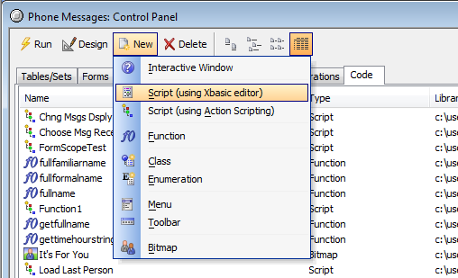

Xbasic is the "Brains" of Alpha Anywhere
The Phone Messages database is in the \Learning Xbasic sub-directory in the Alpha Anywhere program directory. If you followed the standard installation, you should find this database in the \Learning Xbasic under your Alpha Anywhere program directory.
You can do the very same things done by the "Load Last Person" script in Exercise 1 using Alpha Anywhere's menus and buttons. It's a simple matter to load the "Administration" form using the View button on the Control Panel and then pressing the Last button to load the last record as shown in Figure 10.

Figure 10
But here's the interesting part! When you click on the buttons like the Last button, Alpha Anywhere is actually performing the same Xbasic commands that are in the "Load Last Person" script you examined above. When you press the Last button Alpha Anywhere performs the Xbasic command CURRENT_FORM_NAME.Fetch_Last() (where the actual name or reference to the current form is substituted in the Xbasic command for CURRENT_FORM_NAME ).
In fact, Xbasic is such a powerful language, that most of the Alpha Anywhere menu commands, buttons, and screens are Xbasic commands and scripts themselves. This means that the more Xbasic commands you learn, the more you can customize your applications to look, perform, and execute commands just the way you want them to.
Keep in mind that Alpha Anywhere is running Xbasic "behind the scenes" when you use the built-in Alpha Anywhere menus and commands. And, as you'll see later on, Alpha Anywhere can actually write Xbasic code for you! Action scripting are a set of Alpha Anywhere Genies that ask you what you want to accomplish and then create scripts automatically. You can modify the code to tweak it in just the way you want, but you save the time and effort of starting from scratch.
|
Action Scripting is an alternative
way to create an Xbasic script without just typing in Xbasic commands.
When you create a new script, you can choose to go directly to the Code Editor or use the Action Scripting
Editor. |
In Figure 11 you can see the choices available to you when you create a new script. In this case, we clicked on the Code tab in the Control Panel and then clicked the New button.

Figure 11
The icon for creating a script using the Xbasic Code Editor is a page of Xbasic code. The icon for creating a script using Action Scripting is a sequence of colored symbols that represent the actions you can automatically specify to run in sequence in your script.
 Note : In the
listing of scripts and other items in the Code
tab of the Control Panel, all scripts are represented
by the colored symbols icon whichever way they were originally created.
Note : In the
listing of scripts and other items in the Code
tab of the Control Panel, all scripts are represented
by the colored symbols icon whichever way they were originally created.
We will be exploring script creation using both the Xbasic Code Editor and the Action Scripting Genies in exercises to come. But first, lets talk about the other options that appear in the drop-down menu shown in Figure 11, in particular the Interactive window.
|
|
Next
Learning Xbasic "Interactively"